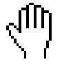

Search
When you hear "cursor," you may think of these old friends:
In the context of pagination, cursors are markers which designate how results display after you’ve queried an endpoint.
Throughout the Slack platform, you'll encounter collections of things. Lists of users. Arrays of channels. A pride of lion emoji.
When you call an API method to retrieve most of these collections, they're returned to you in chunks of data. Check out more detail below on pagination in API methods, including how to use them and which methods follow the pattern.
Most methods that support pagination use a cursor-based approach, which uses a string to divide a list of results. However, some older methods use varied versions of pagination. The individual documentation for each API method is your source of truth for which pattern the method follows.
For larger collections like channel and user lists, Slack API methods return results using a cursor-based approach.
Cursors are like pointers. ℹ️ Pointers point at things: they reference a specific iota, a place in the list where your last request left off. They help avoid loading an entire set just to give you a slice.
A cursor-paginated method returns two things: a portion of the total set of results, and a cursor that points to the next portion of the results.
Please paginate along with us.